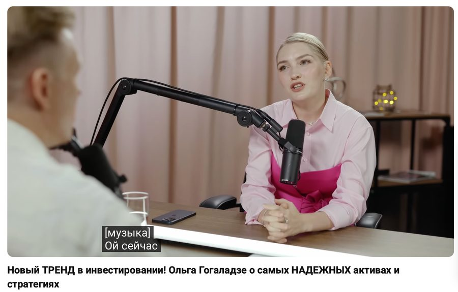
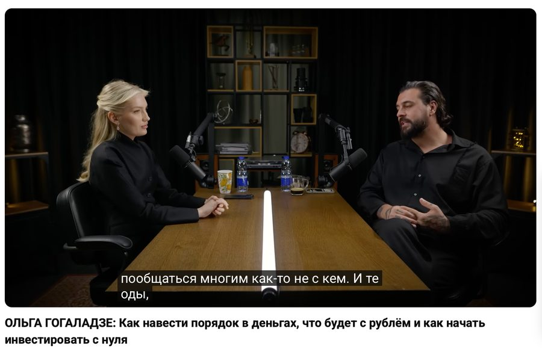
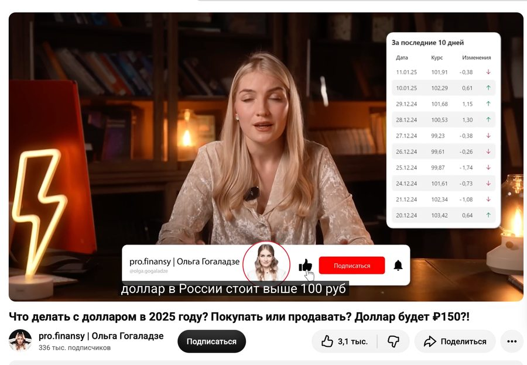
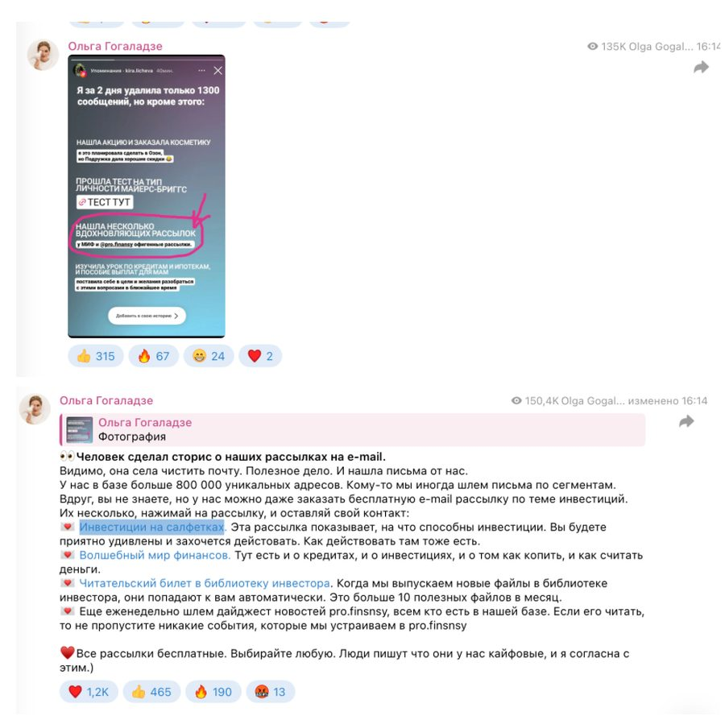

Оль, я проанализировала твои последние видео на ютубе и посты в телеграм за последний год и предлагаю решение, которое быстро реализовать. Оно сразу начнёт работать и приносить деньги.
Чтобы посчитать точнее, мне нужно понять:
Оль, ты просила показать. Специально подобрала форматы, которые можно адаптировать под тебя.

▶️Смотреть интервью↗«Слушай, а давай мы подарочек подарим для наших подписчиков, если так можно. У меня есть несколько статей и уроков, они абсолютно бесплатные. Если вы совсем только начинающий человек в сфере финансов — вы можете пойти почитать их, посмотреть. Там статья о том, как я накопила 228 000 руб., откладывая всего лишь по 200 руб. в день. Что такое акции, облигации, как они работают — абсолютно классный материал. А я сейчас ещё коплю деньги для своих детей, каким образом я это делаю — можно пойти посмотреть. Я там даже ничего не продаю.»прямой призыв на подарки, тайминг 1:09:00 🎁Как копить, откладывая по 200 р в день↗ 🎁Как работать с акциями↗ 🎁Как работать с облигациями↗ 🎁Как Оля копит деньги своим детям↗

▶️Смотреть интервью↗ 🎁Статья «Экономим миллионы на жилье»↗ 🎁Марафон «Долговая разгрузка»↗ 🎁Марафон «7 способов вкладывать деньги»↗ призыв на тайминге 1:07:23–1:07:49 🎁Конспект книги «Мозг и деньги»↗ призыв на тайминге 1:07:11
▶️Смотреть видео↗«...если вам интересно как это делать, то инструкцию я вам под видео размещаю, пожалуйста, забирайте.»🎁Инструкция по зарубежным счетам↗ призыв на тайминге 9:51
«...можно настроить себе автопополнение, инструкцию каким образом я делала автопополнение в инвестициях можете найти под этим видео.»🎁Инструкция по автопополнению в инвестициях↗ призыв на тайминге 33:10
«Подписывайтесь обязательно на мой официальный телеграм-канал, там я выкладываю свои прогнозы, свои мысли о том, что будет происходить с долларом в том числе дальше.»перевод в телеграм-канал, тайминг 37:38–37:47
Требует меньше всего трудозатрат от тебя, и её же можно сразу адаптировать под email. Это то предложение, которое выше.
👀Посмотреть пример: еженедельник + курс↗У взрослой платёжеспособной аудитории хорошая открываемость, регистрации и продажи. Человек сам даёт добро получать письма, привыкает их открывать, прогревается и покупает. Позже его можно перевести в другие каналы связи.
💌 Инвестиции на салфетках. Эта рассылка показывает, на что способны инвестиции. Вы будете приятно удивлены и захочется действовать. Как действовать там тоже есть.
🎁Инвестиции на салфетках↗💌 Волшебный мир финансов. Тут есть и о кредитах, и о инвестициях, и о том как копить, и как считать деньги.
🎁Волшебный мир финансов↗💌 Читательский билет в библиотеку инвестора. Когда мы выпускаем новые файлы в библиотеке инвестора, они попадают к вам автоматически. Это больше 10 полезных файлов в месяц.
Пример, как Оля звала на эти рассылки:

Делаем как обычный запуск, провожу его вместе с тобой, потом оформляю в автоворонку. Дальше её можно встраивать в другие воронки и вести на неё в том числе с рекламы.
🎁Марафон «Долговая разгрузка»↗ 🎁Марафон «7 способов вкладывать деньги»↗Чтобы принимать быстрые и качественные решения на цифрах, а не на ощущениях.
Всё сразу брать не нужно, можно делать по очереди.
Предлагаю начать с воронки в телеграм. Потому что она требует меньше всего времени от тебя, собирается из того, что уже снято, и её же потом можно адаптировать под email без переделки.
Напиши, как тебе?